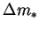
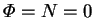
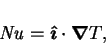
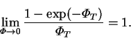
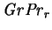

In discussing various hydrodynamic features of the present problem, I shall often have cause to refer to the `analogous single fluid heat transfer problem', for which there exists an extremely extensive body of literature; see Gebhart et al. (1988, pp. 737-52), Ostrach (1988) or Bejan (1995, ch. 5) for a review.
To facilitate this, its equations are derived here;
this being briefly accomplished since they are merely a limiting
case of the present set, formed by setting the vapour mass fraction difference,
, to zero (i.e. ) in the equations of
motion (2.54) and energy (2.55):
|  | (2.71) |
|  | (2.72) |
The product  is frequently called the Rayleigh number, Ra.